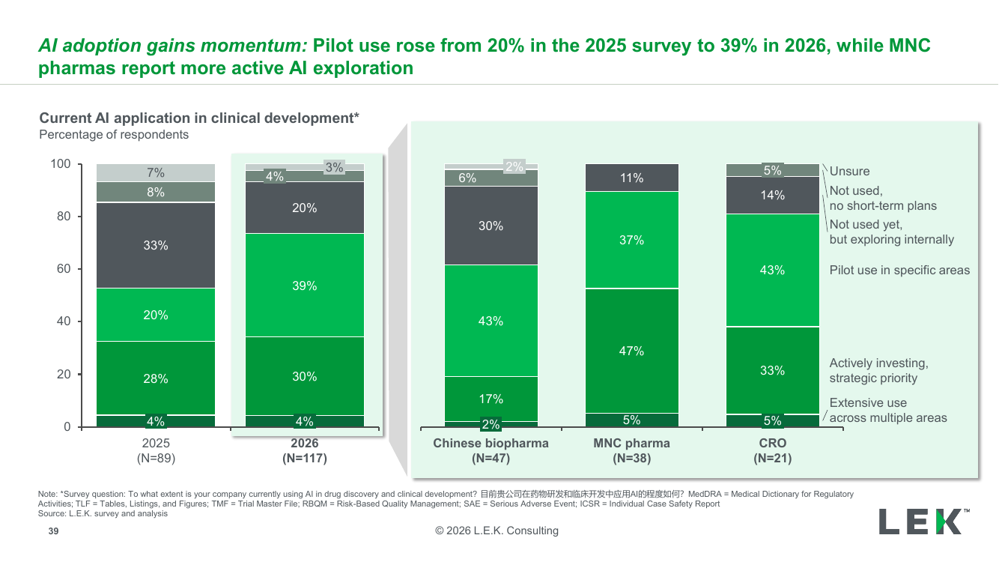
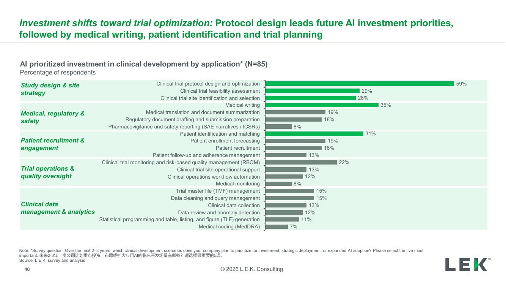
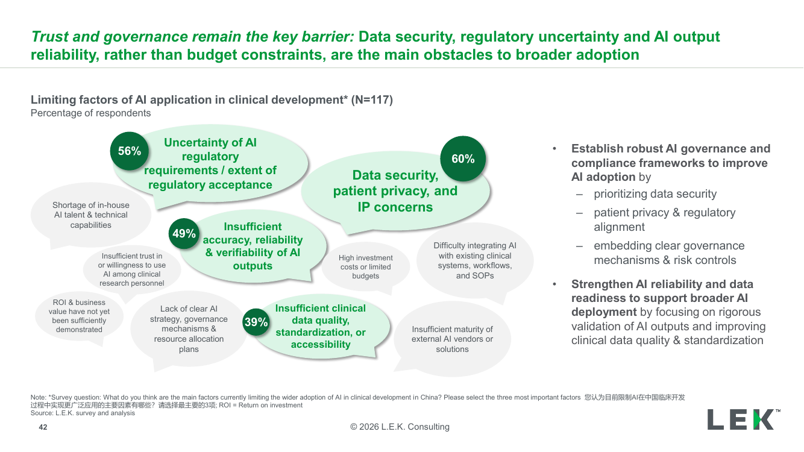

国内优势集中在“启动以前”
患者资源、成本和启动速度构成相对优势；全球后期开发更看重合规、质量和跨境运营。
患者与中心资源
启动速度与成本
全球合规交付
跨机构数据标准
“临床研究”在附件语境中主要指药物临床开发；IIT、器械、RWE 和院外健康管理不应直接套用同一组数字。
这份网页把附件 PDF、太美大会演示和太美官方财报放在同一条证据链上：先看行业，再看 AI 的真实落点，最后判断平台、服务和院内外场景能否形成付费闭环。
阅读方式：蓝绿色标签 = 公开披露/调查；橙色 = 公司宣称；紫色 = 演示或未独立验证。
附件材料更适合用来判断趋势，不宜替代国家注册试验数据库或完整行业统计。
患者资源、成本和启动速度构成相对优势；全球后期开发更看重合规、质量和跨境运营。
材料估计，中国药企在中国开展的试验约占 80%；本土项目更偏国内 CRO，MRCT/出海项目更偏跨国 CRO。
市场机会不只在“把患者招进来”，更在于把医院、CRO、申办方之间的证据流、任务流和合规流接起来。
先看低风险、可审计的任务，再逐步进入方案、终点和成功率预测。
比例表示调查对象将其列为未来投资重点，不是收入占比。
数据源：L.E.K. × PharmaDJ 调查，样本 N=117。
文档、数据质控、医学分析、药物警戒、站点与患者识别。
PoS、虚拟患者、剂量和终点推荐，必须补外部验证。
2026 年调查：pilot、actively investing、extensive 三种状态并不构成完整百分比。
中国企业仍在加速试验启动和资源匹配，因此方案设计、可行性评估、中心识别和患者识别更靠前。
更偏成熟的捕获、分析、质量与跨国流程，因此数据管理和分析型 AI 的比重更高。
文档、编码、Query、ICSR、数据结构化、医学报告。
中心识别、患者匹配、医学监查、RBQM、入组预测。
PoS、剂量、终点、虚拟患者、试验模拟。
公开财报证明已有平台和 SaaS/AI 产品收入，但没有公开 AI 独立 ARR 和续费率。
AI 临床开发平台毛利率明显高于临床试验服务，说明产品化程度不同。
不是“只卖模型”，而是用平台收费，再用数据管理、医学分析、终点评估和临床执行承接高价值交付。
新合同额不等于当期收入，也不等于经常性收入，但可以证明已经进入销售和交付体系。
eCollect/EDC、eCOA/ePRO、IWRS、eCooperate/CTMS、eArchives/eTMF。
eSitePro、IIT-EDC、HIS/LIS 接入、伦理、研究诊疗、研究药物管理。
eSafety/iPV、iMAP、IRC/eImage、PFS/OS 跟踪、AI 辅助终点评估。
Wiz.AI、iDM 数据管理、iCTA 临床试验/方案、iPV 药物警戒。
PharmaOS、SFE、辖区管理、流向数据、销量预测和业绩管理。
AI-enabled CRO、临床资产开发基金，形成平台+服务+资产投资组合。
更准确的划分是：院内研究管理、跨机构临床运营、患者院外触达。
| 层级 | 典型模块 | 主要采购者 | 当前判断 |
|---|---|---|---|
| 院内研究管理 | eSitePro、IIT-EDC、HIS/LIS、伦理、研究诊疗、研究药物 | 医院、研究机构、科研管理部门 | 明确存在 医院内流程数字化是清晰场景。 |
| 跨机构临床运营 | EDC、CTMS、PV、医学分析、终点评估、Wiz.AI | 药企、CRO、医院研究中心 | 核心业务 太美主要收入和平台价值集中于此。 |
| 患者院外触达 | 远程随访、PRO、患者招募、RWD、慢病管理 | 药企、医院、健康管理平台 | 证据不足 未见太美已形成成熟的患者端商业闭环。 |
点击场景筛选，观察哪家公司更接近你的目标。
把“能演示”转成“可采购、可审计、可复购”。
统一数据模型、权限、稽查痕迹和溯源，再叠加 AI。
AI 输出必须直接进入 EDC、CTMS、PV、医学分析和文档流程。
复杂场景用专家交付验证 ROI，避免只卖一个聊天窗口。
边界定义 → 小范围 Pilot → 合规验证 → SOP 重设 → 扩大部署。
图像用于定位原始页；网页中的重绘图采用同一数据，但已经把证据等级写在图旁。

2025 pilot use 20%，2026 pilot use 39%；分组织给出 pilot、actively investing 和 extensive。

方案设计/优化、医学写作、患者识别、中心识别和可行性评估排在前面。

数据安全、监管不确定性、输出可验证性和数据标准化是主要障碍。